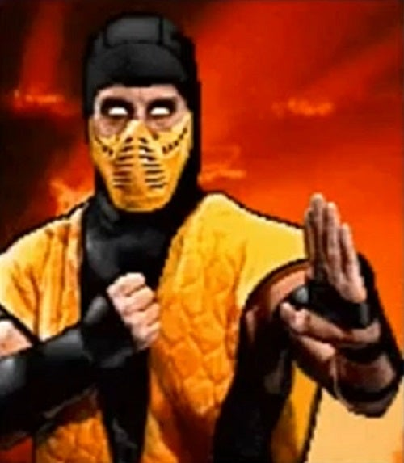
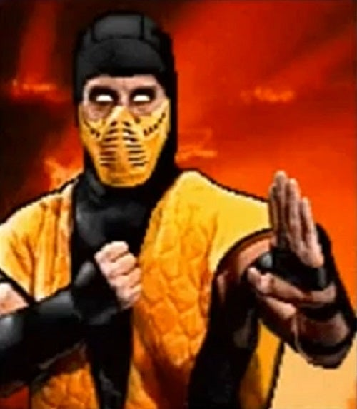
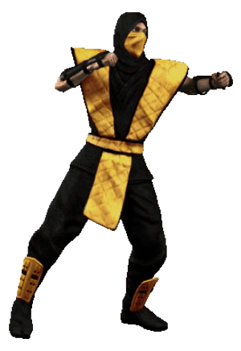

About Scorpion
Scorpion is awesome! He is actually an accursed undead specter seeking revenge in the Mortal Kombat tournament. He is a ninja warrior who was killed by his arch-nemesis Sub-Zero (a blue color-swap version of him) survived by a wife and child, and was allowed to return to the physical realms in order to have his revenge. The curse of Scorpion's supernatural existence means he can have his vengeance but can't reunite with his still-living family. Ultimately after the tournament is won by the human champion Liu Kang, Scorpion kills Sub-Zero.
Say hello to the Yellow Fellow!
Palette swap versions of Scorpion
- Sub-Zero as the blue ninja
- Reptile as the green ninja
- Smoke as the gray ninja
- Noob Saibot as the black ninja - fun fact, his name comes from the mirrored version of Tobias Boon, one of the main devs
- Ermac as the red ninja
- Rain as the purple ninja
- Chameleon as, well, you've guessed it...
- Tremor as the brown ninja
His arsenal
- Spear: Back, Back, Low Punch.
- Teleport Punch: Down, Back, High Punch.
- Toasty!: (Can hold Block or high kick) Up, Up. (Sweep)
Scorpion in live-action adaptations
Since the original release of the video game in 1992, Scorpion gripped the imaginations of different screenwriters, moviemakers and showrunners. Over the past 30 years there has been several attempts to adapt the video game to the TV and cinema screens. These are some of the actors who has been cast in the glorious role of Scorpion:
- He was played by Chris Casamassa in the original Mortal Kombat in 1995
- Also, he was played by Ian Anthony Dale from the TV series Mortal Kombat: Legacy in 2011
- Furthermore he was portrayed by Hiroyuki Sanada in the reboot in 2021